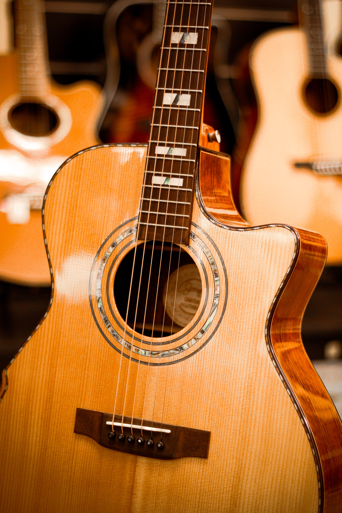
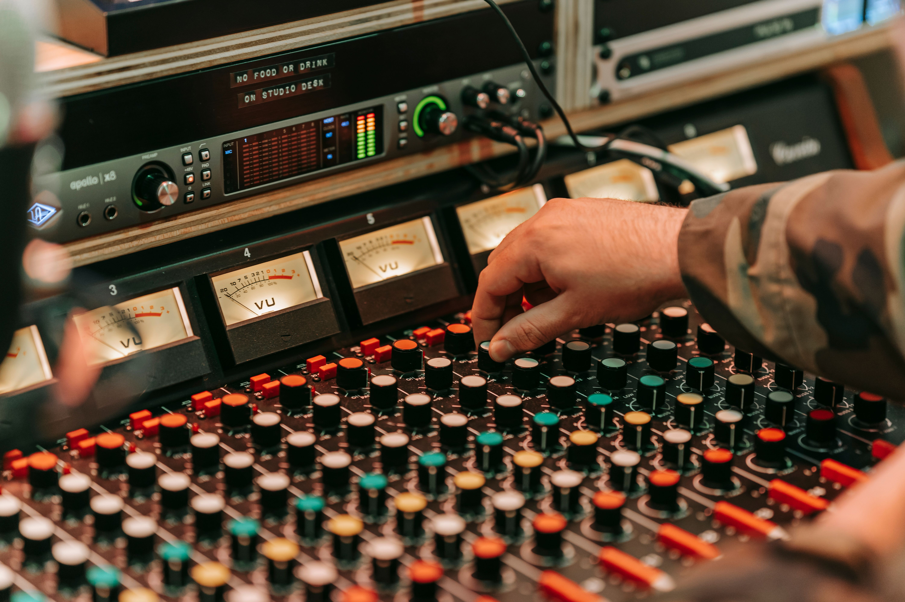
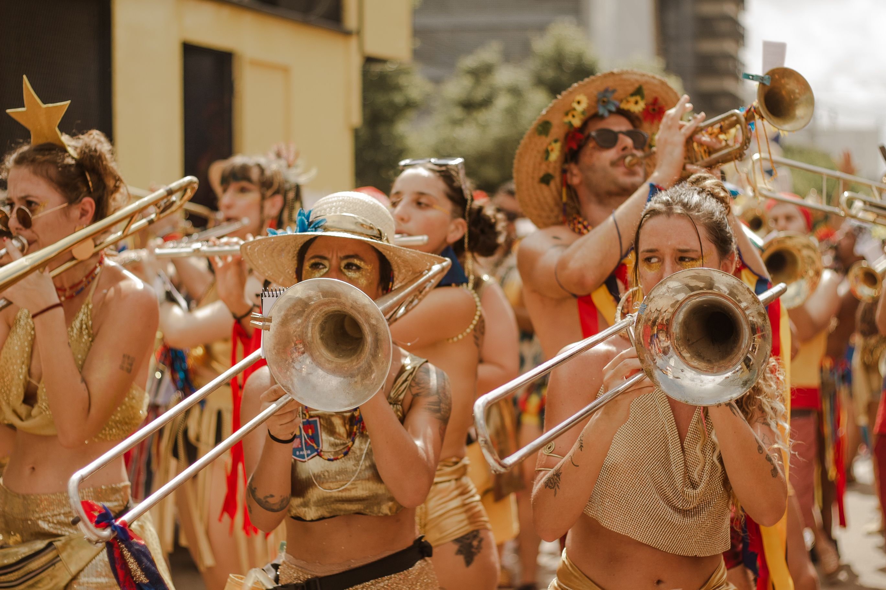

Diseño personalizado
Creamos una página adaptada a la identidad, estilo y necesidades de cada artista o proyecto.
Creamos páginas web profesionales para artistas, músicos y proyectos culturales, adaptadas a tu estilo y pensadas para mostrar tu trayectoria, proyectos y trabajo de forma clara y atractiva.
Creamos una página adaptada a la identidad, estilo y necesidades de cada artista o proyecto.
Muestra tu experiencia, formación, proyectos y logros de una manera clara y profesional.
Una web pensada para dar visibilidad a tu trabajo, facilitar el contacto y fortalecer tu presencia digital.
Más de una década dedicada a la investigación, gestión cultural y recuperación del patrimonio musical español.
Estudio especializado en tu empresa musical.
Nos adecuamos a tus gustos, además de brindarte variedad de ideas para tu página.
Demostramos participación en conferencias, cursos y actividades de divulgación musicológica.

Algunos datos que reflejan el alcance de su trayectoria profesional.
Años de experiencia
Publicaciones
Proyectos culturales
Festivales nacionales e internacionales
Una selección de iniciativas que reflejan su trabajo en investigación, gestión cultural y difusión del patrimonio musical.

Dirección técnica y coordinación de tu empresa.

Publicaciones y estudios dedicados a ti.

Organización y coordinación de eventos musicales de alcance nacional o internacional.
Descubre algunos de nuestros trabajos y colaboraciones.